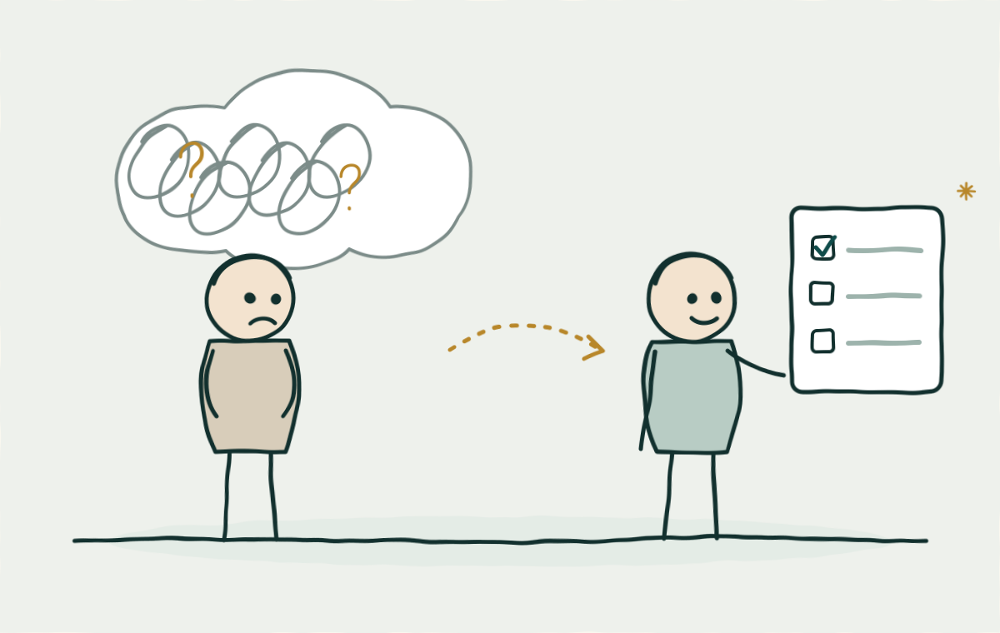

Articles · Mind and health
How to stop overthinking: six steps that actually help
Replaying the past and rehearsing the future can feel like problem-solving. Most of the time it is a loop.

You replay a conversation for the tenth time. You turn a simple decision over and over until it feels impossible. You lie awake running through everything that could go wrong. Your mind is working hard, but nothing is getting solved.
That is overthinking. It is very common, and it is not a sign that something is wrong with you. It is a habit, and habits can change.
Two kinds of overthinking
Overthinking usually takes one of two shapes:
- Replaying the past. Going back over what you said, what they meant and what you should have done. Psychologists call this rumination.
- Rehearsing the future. A chain of “what if” thoughts about things that might go wrong. This is worry.
Both are forms of repetitive thinking. Both feel like you are getting somewhere. Often you are not.
Why it feels useful, and why it usually is not
Psychologist Edward Watkins reviewed the research on repetitive thinking and found that the style of thinking matters as much as the topic. Abstract, big-picture questions like “Why does this always happen to me?” or “What does this say about me?” tend to keep the loop going and lower your mood. Concrete, specific questions like “What happened, exactly?” and “What is one thing I could do next?” are linked to better problem-solving.
In other words, the problem is not that you think. It is that the thinking stays vague, so it never reaches an answer.
Ask “how?” instead of “why?” A “why” question can circle forever. A “how” question leads to a next step.
Six steps out of the loop
- Catch it. Notice when you are looping and name it: “I am overthinking again.” A useful test: has the last ten minutes of thinking given you a new idea or a next step? If not, it is a loop, not a plan.
- Get it on paper. Write down everything that is spinning around your head, in any order. Thoughts look smaller and clearer outside your head. Our brain dump page is made for this.
- Sort it: practical or what-if? The NHS suggests asking one question about each worry: is there anything practical I can do about this? If yes, it is a practical problem. If not, it is a hypothetical worry.
- Turn practical worries into one next step. For each practical worry, write a small, concrete action and when you will do it. “Email Sam about the deadline on Monday morning” beats “sort out work.”
- Give what-ifs a time slot. For worries you cannot act on, the NHS recommends setting a short “worry time” each day, around 10 to 15 minutes. When a worry pops up, tell yourself, “I will think about that later,” and bring your attention back to what you are doing. This is called worry postponement, and randomized trials have found it can reduce how much people worry. Keep your worry time well before bed.
- Change the channel. Loops get stronger when you sit still with them. Move your body, step outside, call someone or do something that needs your full attention. If your body feels tense, a few minutes of slow breathing can help it settle first.
Overthinking a decision?
Some loops are about choices, not worries. Try three things. Set a deadline for the decision and put it in your calendar. Decide what “good enough” looks like before you compare options, so you know when to stop. And remember that most decisions can be adjusted later. You are choosing a next step, not your whole future.
When to get help
Everyone overthinks sometimes. But if worry or rumination fills most of your day, affects your sleep, work or relationships, or comes with low mood that does not lift, talk to a doctor or a mental health professional. Talking therapies such as CBT are designed to help with exactly this. If you are in crisis, contact your local emergency number or a crisis line in your country.
Keep going
- How to quiet a racing mind at night
- Free lesson: Catch the loop
- Free lesson: A worry window
- Take the one-minute stress check-in
Sources
- Tackling your worries, NHS Every Mind Matters
- Constructive and unconstructive repetitive thought (Watkins, 2008), Psychological Bulletin, via PubMed Central
- Worry postponement from the metacognitive perspective: a randomized waitlist-controlled trial (2024), Clinical Psychology in Europe, via PubMed
This article is general self-help information, not medical advice. If you are struggling, talk to a doctor or a mental health professional.